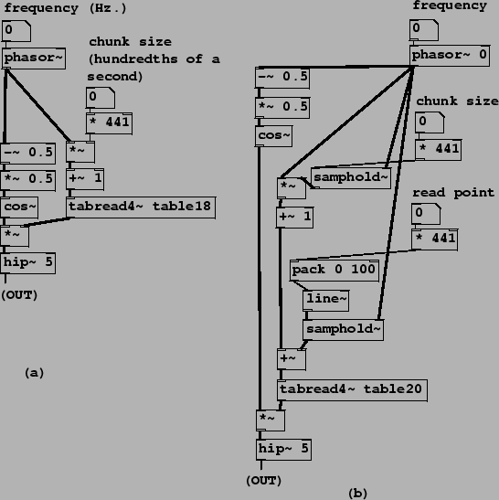
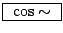
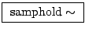

In most situations, you'll want a more automated way than moving the mouse to specify wavetable read locations; for instance, you might want to be able to play a sample at a steady transposition; you might have several samples playing back at once (or other things requiring attention), or you might want to switch quickly between samples or go to prearranged locations. In the next few examples we'll develop an automated looping sample reader, which, although only one of many possible approaches, is a powerful and often-used one.
Patches B05.sampler.loop.pd and B06.sampler.loop.smooth.pd show how to do this: the former in the simplest possible way and the latter (pictured in Figure 2.15, part a) incorporating a second waveshape to envelope the sound as described in Section 2.3. One new object class is introduced here:
|  |
:
compute the cosine of  times the input signal (so that 0 to 1 makes a whole
cycle). Unlike the table reading classes in Pd, cos~ handles
wraparound so that there is no range limitation on its input.
times the input signal (so that 0 to 1 makes a whole
cycle). Unlike the table reading classes in Pd, cos~ handles
wraparound so that there is no range limitation on its input.
In Figure 2.15 (part a), a phasor~ object supplies both indices into the wavetable (at right) and phases for a half-cosine-shaped envelope function at left. These two are multiplied, and the product is high-pass filtered and output. Reading the wavetable is straightforward; the phasor is multiplied by a ``chunk size" parameter, added to 1, and used as an index to tabread4~The chunk size parameter is multiplied by 441 to convert it from hundredths of a second to samples. This corresponds exactly to the block diagram shown in Figure 2.5, with a segment location of 1. (The segment location can't be 0 because 1 is the minimum index for which tabread4~ works.)
The left-hand signal path in the example corresponds to the enveloping
wavetable lookup technique shown in Figure 2.7. Here the sawtooth
wave is adjusted to the range (-1/4, 1/4) (by subtracting and multiplying by
0.5), and then sent to cos~. This reads the cosine
function in the range ( ,
,  ), thus giving only the positive half
of the waveform.
), thus giving only the positive half
of the waveform.
Part (b) of Figure 2.15 introduces a third parameter, the ``read point", which specifies where in the sample the loop is to start. (In part (a) we always started at the beginning.) The necessary change is simple enough: add the ``read point" control value, in samples, to the wavetable index and proceed as before. To avoid discontinuities in the index we smooth the read point value using pack and line~ objects, just as we did in the first sampler example (Figure 2.14).
This raises an important, though subtle, issue. The Momentary
Transposition Formula (Page  ) predicts that, as
long as the chunk size and read point aren't changing in time, the
transposition is just the frequency times the chunk size (as always, using
appropriate units; Hertz and seconds, for example, so that the product is
dimensionless). However, varying the chunk size and read point in time will
affect the momentary transposition, often in very noticeable ways, as can be
heard in Example B07.sampler.scratch.pd. Example B08.sampler.nodoppler.pd (the one shown in the figure) shows
one possible way of controlling this effect, while introducing a new object
class:
) predicts that, as
long as the chunk size and read point aren't changing in time, the
transposition is just the frequency times the chunk size (as always, using
appropriate units; Hertz and seconds, for example, so that the product is
dimensionless). However, varying the chunk size and read point in time will
affect the momentary transposition, often in very noticeable ways, as can be
heard in Example B07.sampler.scratch.pd. Example B08.sampler.nodoppler.pd (the one shown in the figure) shows
one possible way of controlling this effect, while introducing a new object
class:
:
a sample and hold unit. (This will be familiar to analog synthesizer users,
but with a digital twist; for more details see Section 3.7.)
This stores a single sample of the left-hand-side
input and outputs it repeatedly, until caused by the right-hand-side input (also
a digital audio signal, called the trigger) to overwrite the stored
sample with a new one--again
from the left-hand-side input. The unit acquires a new sample whenever
the trigger's numerical value falls from one sample to the next. This is
designed to be easy to pair with phasor~ objects, to facilitate
triggering on phase wraparounds.
Example B08.sampler.nodoppler.pd uses two samphold~ objects to update the values of the chunk size and read point, exactly when the phasor~ wraps around, at which moments the cosine envelope is at zero so the effect of the instantaneous changes can't be heard. In this situation we can apply the simpler Transposition Formula for Looping Wavetables to relate frequency, chunk size, and transposition. This is demonstrated in Example B09.sampler.transpose.pd (not shown).